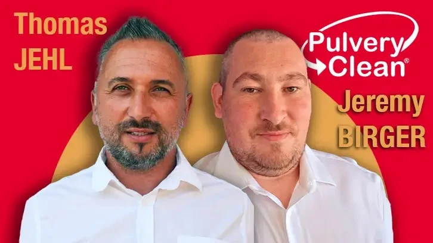

Respect de l'environnement
Nous travaillons sans chlore ni javel. Nos produits préservent vos joints, vos végétaux et la nappe phréatique.
Qui sommes-nous
Une entreprise alsacienne à taille humaine, fondée sur une idée simple. Bien entretenir une maison coûte moins cher que la rénover, et c'est meilleur pour la planète.

PulveryClean Alsace est né de la rencontre de deux passionnés du travail bien fait, Thomas Jehl et Jérémy Birger. Tous les deux co-gérants, ils ont décidé d'unir leurs compétences pour proposer un service de nettoyage extérieur sérieux, accessible et respectueux de l'environnement.
Très vite, le bouche à oreille a fait son travail. Les clients apprécient une chose simple, des artisans qui tiennent leurs promesses, du devis jusqu'à la fin du chantier. C'est ce qui nous vaut aujourd'hui une note de 5 sur 5 sur Google.
Co-gérant, responsable commercial
Votre interlocuteur pour les devis et le suivi de votre projet.
Co-gérant, responsable technique
Aux commandes des interventions et de la qualité sur le terrain.
Nos valeurs
Nous travaillons sans chlore ni javel. Nos produits préservent vos joints, vos végétaux et la nappe phréatique.
Un devis clair et détaillé, à partir de 5 €/m². Pas de surprise, pas de coût caché.
Nous protégeons systématiquement vos abords, terrasse, piscine et jardin avant de commencer.
Artisans locaux basés à Bindernheim, nous connaissons l'Alsace, son climat et ses bâtisses.

Beaucoup d'entreprises misent sur la haute pression et les produits agressifs. Le résultat est rapide, mais il fragilise les surfaces et revient vite. Notre approche est différente.
Nous adaptons la technique au support et privilégions des traitements pensés pour durer. Vos surfaces restent propres plus longtemps, et vous espacez les interventions. C'est plus économique pour vous, et plus sain pour l'environnement.
Discutons de votre projet. Le premier conseil et le devis sont gratuits.